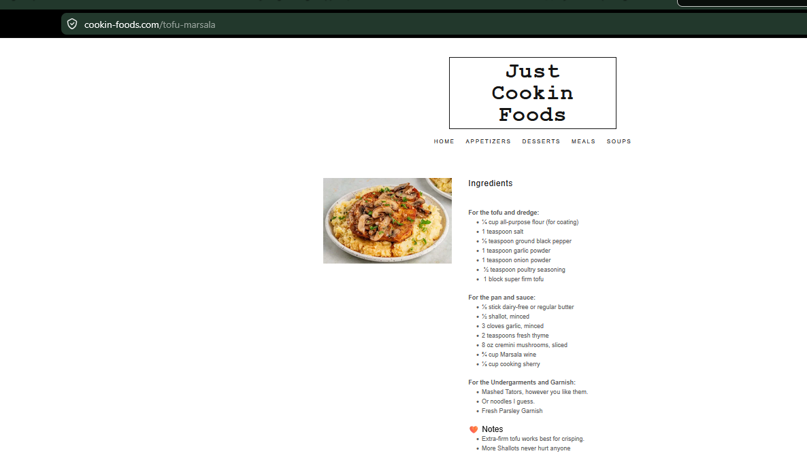

Tofu Marsala
Golden tofu cutlets in a mushroom Marsala sauce over mashed potatoes or pasta.
Ingredients
Tofu and Dredge
- ¼ cup all-purpose flour
- 1 tsp salt
- ½ tsp ground black pepper
- 1 tsp garlic powder
- 1 tsp onion powder
- ½ tsp poultry seasoning
- 1 block super-firm tofu
Pan and Sauce
- ½ stick butter or dairy-free butter
- Olive oil
- 3 garlic cloves, minced
- ½ shallot, minced
- 8 oz cremini mushrooms, sliced
- 2 tsp fresh thyme
- ¾ cup Marsala wine
- ¼ cup cooking sherry
Serve With
- Mashed potatoes or noodles
- Fresh parsley
Instructions
Make dredge
Whisk flour, salt, black pepper, garlic powder, onion powder, and poultry seasoning in a wide bowl until uniform.
Slice and coat tofu
Slice super-firm tofu into ¼-inch-thick cutlets. Press each slab into the flour mixture, flip, coat again, shake off excess, and line pieces up on a plate or pan.
Fry tofu
Heat a large skillet over medium-high heat. Add oil and butter. When it melts into a golden pool, add tofu pieces with space between them. Cook 3–5 minutes per side until golden brown and crisp. Set aside on paper towels.
Make sauce
If the pan is burnt, wipe it out. Add garlic, shallot, mushrooms, and thyme. Cook briefly, then add Marsala wine and cooking sherry.
Reduce
Simmer and reduce the sauce 7–10 minutes or longer, until it reaches a brown gravy consistency. Taste and adjust salt and pepper carefully.
Serve
Serve tofu immediately over mashed potatoes or fresh pasta, spoon sauce over the top, and garnish with parsley.
Notes
- Extra-firm or super-firm tofu works best for crisping.
- Do not overdo the salt; Marsala sauce concentrates as it reduces.
- Mashed potatoes are the preferred base for this comfort meal.